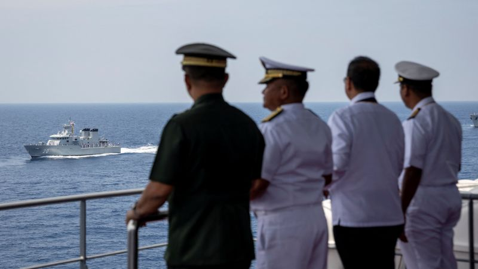

ASEAN's First Joint Military Exercise in the South China Sea

The Southeast Asian bloc ASEAN will hold its first-ever joint military exercise in the South China Sea, its chair Indonesia said on Thursday. This move is significant as it comes at a time of rising tension and uncertainty in the region, with China making territorial claims over most of the South China Sea and other countries, including ASEAN members, challenging those claims.
Why is the Exercise Important?
The joint military exercise is important for several reasons:
- Show of Unity: The exercise is a demonstration of ASEAN's unity and commitment to maintaining peace and stability in the region. By holding the exercise in the South China Sea, ASEAN members are sending a message that they reject any attempt by China to dominate or control the waters.
- Better Coordination: The exercise will also help improve coordination and interoperability between the ASEAN militaries. In the past, ASEAN members have been criticized for being too divided and not working together effectively in the face of security challenges. The joint exercise is a step towards addressing those concerns.
- Deterrence: While the exercise is not aimed at any particular country, it can serve as a deterrent against potential aggressors. By demonstrating their military capabilities and willingness to work together, ASEAN members can discourage any attempts to challenge their territorial integrity or maritime rights.
Case Studies: Past Joint Exercises in Asia
The ASEAN joint military exercise is not the first of its kind in Asia. Several countries in the region have held similar exercises in the past. Here are some examples:
- US-Philippines Balikatan Exercises: The Balikatan Exercises are annual military exercises between the US and the Philippines. The exercises began in 1981 and have focused on counterterrorism, humanitarian assistance, and disaster relief, among other things.

- India-Japan-US Malabar Exercises: The Malabar Exercises are trilateral military exercises between India, Japan, and the US. The exercises began in 1992 as a bilateral exercise between India and the US and were later expanded to include Japan in 2015. The exercises focus on maritime security and interoperability.

- China-Russia Joint Sea Exercises: The Joint Sea Exercises are naval exercises between China and Russia. The exercises began in 2012 and have focused on anti-submarine warfare, live-fire drills, and search and rescue operations, among other things.

Conclusion
The ASEAN joint military exercise in the South China Sea is a significant development in the region's security landscape. By working together, ASEAN members can enhance their capabilities, show their unity, and deter potential aggressors. While the exercise is aimed at maintaining peace and stability, its timing and location cannot be ignored given the ongoing disputes in the South China Sea. Only time will tell whether the exercise will have any tangible impact on the region's security situation.
References
Hashtags
- #ASEAN
- #SouthChinaSea
- #jointmilitaryexercise
- #security
- #tensions
- #China
Article Category
Security
Curated by Team Akash.Mittal.Blog
Share on Twitter Share on LinkedIn